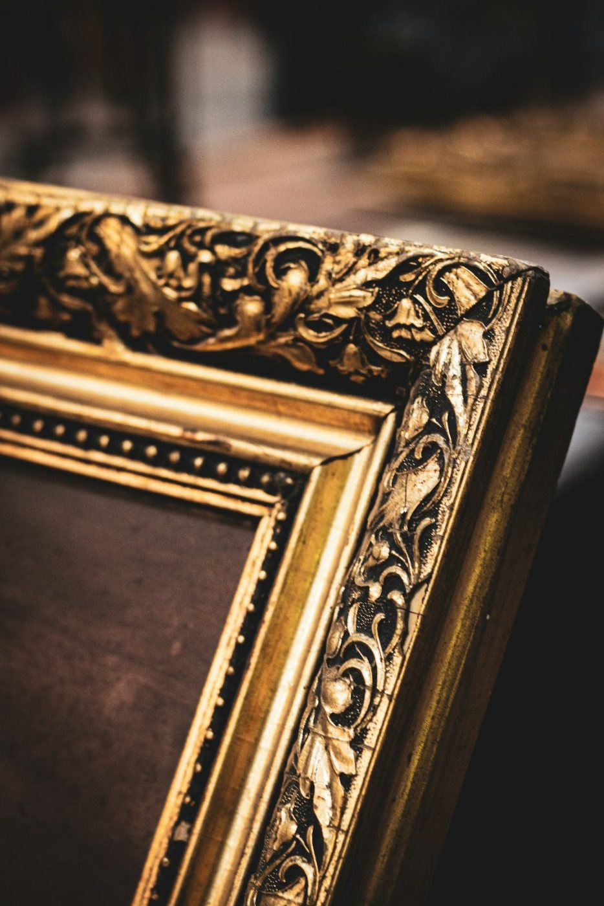

12 / 13
자주 묻는 것
자주 묻는 것은 공방에서 자주 받는 질문 열두 가지입니다.
- 질문
- 12
- 보관
- 완성일부터 30일
질문 고르기
작품 없이 치수만으로 주문할 수 있나요
할 수 있다. 다만 종이 작품은 치수가 표시와 몇 mm씩 다른 일이 많다. 작품을 가져와 다시 잰 뒤 몰딩을 자른다.
캔버스 유화도 유리를 넣나요
넣지 않는 것이 보통이다. 유화는 숨을 쉬어야 하고 유리에 닿으면 물감이 붙는다. 턱이 깊은 상자 몰딩에 캔버스 틀을 그대로 넣는다.
퍼즐·천·입체 작품도 맡기나요
맡는다. 퍼즐은 뒷면을 접착 시트로 고정한 뒤 넣고, 천과 입체 작품은 상자 몰딩에 띄워 넣는다. 높이가 3 cm를 넘으면 상담이 필요하다.
값은 어떻게 정해지나요
몰딩 길이에 1 m당 단가를 곱한 값, 유리·매트·뒷판의 넓이 값, 조립 공임 15,000원을 더한다. 액자 계산 화면의 내역도 이 식으로 셈한다.
같은 액자를 여러 개 맞추면 싸지나요
같은 치수 다섯 개부터 공임을 하나에 10,000원으로 받는다. 몰딩과 유리 값은 그대로다.
선금을 내야 하나요
10만 원이 넘는 주문은 절반을 먼저 받는다. 금박 몰딩과 병풍은 몰딩과 비단을 따로 들여오므로 전액을 먼저 받는다.
왜 작품 아래쪽은 테이프로 붙이지 않나요
종이는 습도에 따라 늘고 준다. 네 변을 다 붙이면 종이가 울어 물결이 생기므로 윗변만 건다.
매트가 누렇게 변했을 때
산성 매트가 빛과 공기를 받아 변한 것이다. 오래 두면 작품 가장자리에도 갈색 줄이 생기므로 중성 매트로 바꾸는 것이 좋다. 매트 교체는 18,000원이다.
햇빛이 드는 벽에 걸어도 되나요
자외선 차단 유리를 넣어도 빛은 작품을 바래게 한다. 해가 바로 닿지 않는 벽에 거는 것이 좋다.
완성일보다 늦게 찾아도 되나요
완성일부터 30일까지 맡아 둔다. 그 뒤로는 하루 1,000원의 보관료를 받는다.
배달도 하나요
담결동 안은 10,000원에 배달하고 걸어 준다. 동 밖은 화물 배송을 알아봐 준다.
다른 사람이 대신 찾아도 되나요
주문 번호와 주문한 사람의 휴대전화 뒷자리 네 개를 말하면 된다.